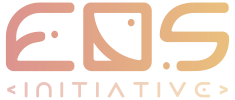

Inspiring girls to code the future
We aim to inspire lower secondary girls to explore computing and empower them with the confidence and skills to pursue future pathways in technology.
Vision
An inclusive community that empowers girls to thrive in computing.
Objectives
To introduce accessible, hands-on computing fundamentals that support strong early understanding.
To expose learners to diverse technology pathways and curate resources that encourage curiosity and self-directed learning.
To foster confidence and growth through mentored team-based projects that celebrate learning progress and achievement.
Foundational Workshops (June)
Introductory workshops focused on Python fundamentals, designed to be hands-on and beginner-friendly, to allow participants build confidence, develop interest in computing, and learn in a supportive environment. We conclude with a capstone project, giving participants the opportunity to apply their new skills in a creative and meaningful way.
Project Phase (July–December)
Participants then move into a project-based phase where they work in small teams of 3–5 members on guided projects in an area of their choice. Teams may propose their own ideas or select from projects designed by our volunteers. Each team is supported by a dedicated mentor who guides project development.
We are a group of girls from various Junior Colleges across Singapore, united by our shared passion for computing and empowering girls in tech.